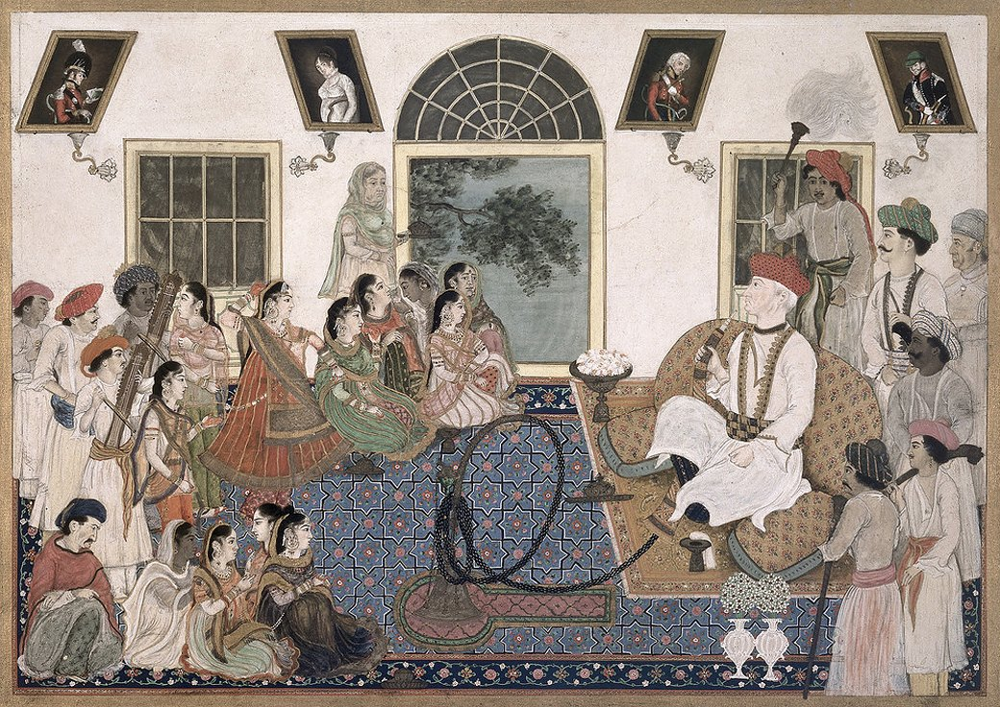
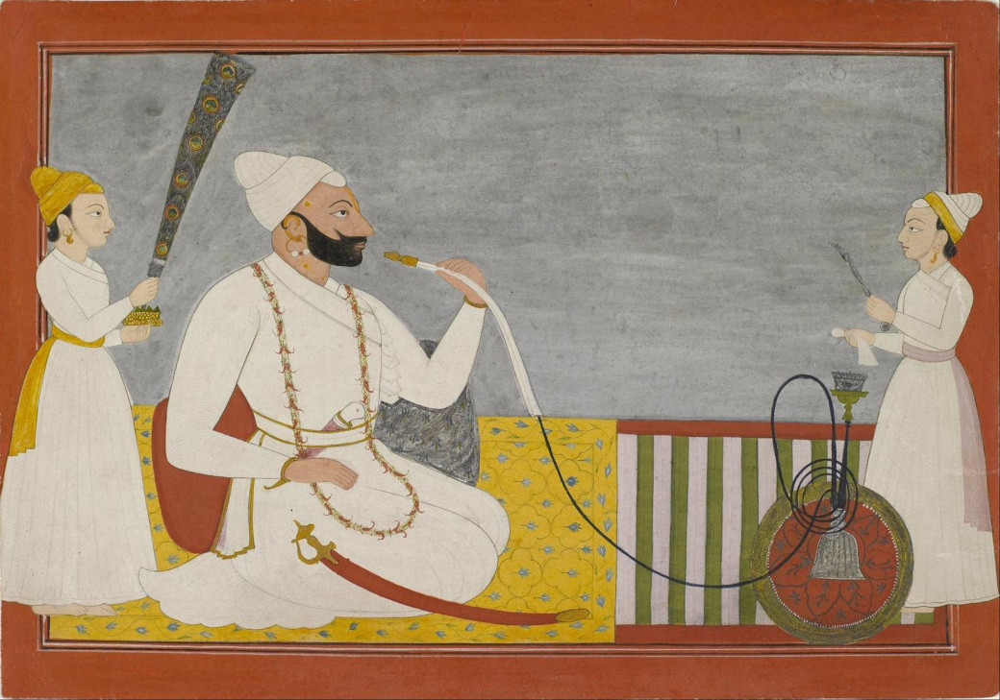

Hookah - не роскошь. Hookah - средство первой значимости
Кальян, как и множество современных вещей – явление далеко не новое. Из-за популяризации кальянов, о них знает каждый. Но мало кто знает историю этого чудесного изобретения. История – штука очень субъективная. Несмотря на то, что историки стараются сделать все возможное для достижения истины, она полнится домыслами и загадками. Все эти тайны не обошли стороной и кальяны.
Кокосы, змеи и казни.
Для того, чтобы понять с чего все началось, вернемся на много лет назад, на Восток. Как и с любым крутым изобретением, которое сохранилось до наших дней и пользуется спросом, не известно кто был создателем курительного приспособления, кому пришла в голову такая конструкция. Судить можно лишь по некоторым фактам и догадкам ученых-историков. Все они сходятся во мнении, что появился первый кальян (или его прародитель) в Индии, как и множество прочих интересных вещей. Но не только индусы, ответственны за то, что кальян заполонил весь мир. Ситуация примерно следующая:
Индусы научили курить кальян персидских кочевников. Те, в свою очередь, рассказали все жителям Египта. Египет находится рядом с Турцией, поэтому кальян и все его прелести перекочевали туда. Из Турции прибор распространился по всем мусульманским странам.

Существует еще одна версия. Согласно ей, кальян в Индии был средством для лечения болезней и медитаций, а вместо табака использовали гашиш. В гашиш подмешивали лекарственные травы и различные виды специй. Такая процедура помогала больному расслабиться, утолить боль и погрузиться в медитацию.
Каким образом? Откуда?
За свою жизнь кальян побывал в разных точках планеты. И каждый народ называл его по-своему. В арабских странах можно услышать такие названия:
- Шиша.
- Наргила.
- Наргиле.
- Аргила.
Эти названия используются во всех арабских странах. Зная хоть одно, вас точно поймут.
Нам привычнее слышать или видеть слово «Hookah». Что за слово такое? Откуда оно взялось? Кто назвал так кальян? Это слово пришло из Индии. Так сложилось, что колонии Британии, увидев впервые кальян (в 1858 – 1947 годах), решили оставить это название курительного приспособления.
Первые вариации кальянов создавали из скорлупы кокоса. Брали кокосовую колбу, а трубку делали из тростника или бамбука. Да, просто. Да, незамысловато. Однако это работало. Кое-где такой прибор для курения табачных листов можно встретить и сегодня.
Сколько стран, столько и методов изготовления кальяна. Египтяне решили все переиначить. Они использовали для кальяна не кокос, а тыкву. Тыкву они вычищали от мякоти и косточек.
А вот жители Персии сделали первые шаги в сторону современного вида кальяна. Для курения табачных листов и смесей (которые они открыли совсем недавно) они изготавливали колбу из глины, а вместо шланга приспособили шкуру змеи.
После чего начинались эксперименты с табаком.
Сейчас рынок просто ломится от вариаций табака, вкусов, брендов и всевозможных моделей кальяна. Он доступен, распространен и популярен, как среди молодежи, так и старших поколений.
Роль кальяна, как культурного феномена.
За столько веков, курение кальяна прошло множество моментов развития, преображения. Сегодня курение кальяна стало искусством, культурным феноменом. В нем прекрасно все, без исключения: атмосфера, обстановка, эмоции, окружающие люди, традиции, церемония, красота самого устройства.
Очень важно то, что за столько лет кальян не утратил своего символизма: атрибут интеллектуальных размеренных бесед, споров, разговоров. Неоднократно за трубкой кальяна рождалась истинна, находились решения самых сложных проблем и семейных распри. У курения кальяна никогда не было границ: его употребляли, как девушки, так и мужчины. Это можно увидеть на древних фресках и рисунках.

Несколько интересных фактов из истории курительного приспособления.
- Кальян, который находится в Лос-Анджелесе в баре Hollywood Hookah Lounge, является самым большим в мире. Его габариты: 5 метров в высоту и 1 метр в обхвате.
- Самый высокий кальян, по версии Книги Рекордов Гиннеса, был представлен в Москве. Его высота была 10 метров и 30 сантиметров.
- Шведская компания Desvall стала известна на весь мир своим подходом к изготовлению кальянов. Их продукция создаётся из дорогой керамики, драгоценных металлов и камней Сваровски.
- Кальян не вызывает привыкания, как сигареты. Но нельзя оставить без внимания тот факт, что он не является безвредным для здоровья.
Вот такая история этого устройства. Что из этого правда, а что выдумка и догадки ученых – решать каждому.